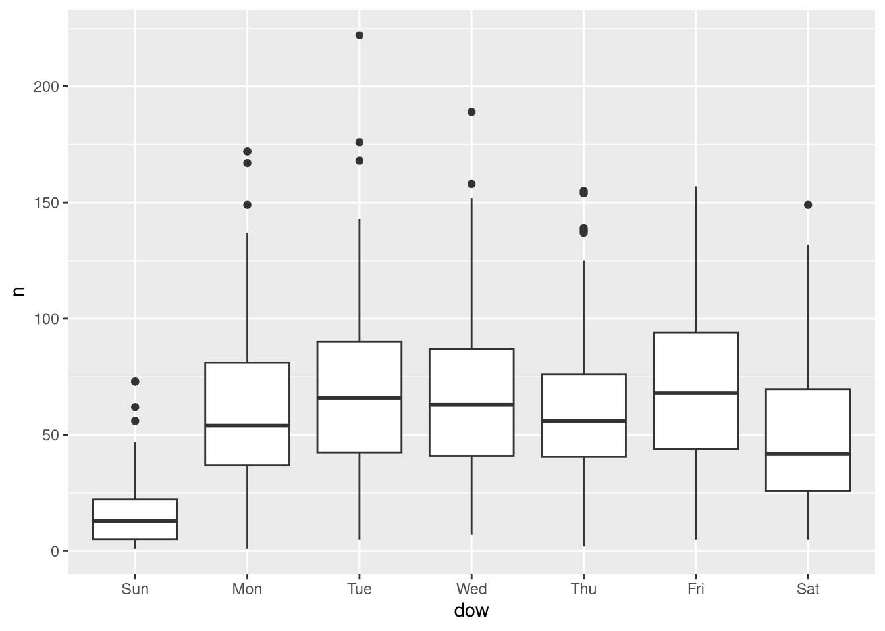

![]()
# suppressing the startup messages
library(tidyverse) |> suppressPackageStartupMessages()
# ggplot2 is a core tidyverse package so it's
# included in the namespace when folks `library(tidyverse)`1 Goal
Today we’re going to:
- Introduce plotting with R and the
ggplot2package - Provide resources for further reading
- Highlight some best practices
2 The Setup
I’ll be using renv - however, renv is not the focus of today. Plotting in R using the ggplot2 package is. Be sure to check out the doco here. We’re going to start by attaching the libraries with library().
3 The Data
Today we’re going to use the Electric Vehicle data from our #tidytuesday community challenge.
3.1 Grabbing the Data
Unfortunately, RSocrata was pulled from the CRAN - so we’re going to have to homebrew our own solution.
Fortunately, I put together a gist on github. You may recall Charles Powell introduced these last year. You can take a look at the gist here.
We can use devtools to source the gist and grab the function I wrote to download all the EV data.
Tip
devtools is a collection of packages, like the tidyverse that aims to smmoth over alot of rough edges in development. Primarily around building R packages or interacting with GitHub, but there is all sorts of neat things in devtools - so be sure to check it out.
devtools::source_gist(
id = "https://gist.github.com/asenetcky/52bf3fa10a2dff08f62da96e2347e018",
sha1 = "5b27e785462239543a6cda235382ebec7c381471"
)ℹ Sourcing gist "52bf3fa10a2dff08f62da96e2347e018"# function exist?
head(pull_odp)
1 function (domain = "https://data.ct.gov/", resource)
2 {
3 checkmate::assert(checkmate::check_string(domain), checkmate::check_string(resource,
4 n.chars = 9L), combine = "and")
5 resource_string <- glue::glue("resource/{resource}.json")
6 limit <- 10000 We have our function, now lets grab that open data.
ev <- pull_odp(resource = "y7ky-5wcz") # this is the ODP "four by four"3.2 Data Recon
Lets take a look at this dataset so we can have a better idea of what we are working with.
head(ev)# A tibble: 6 × 20
id platetype primarycustomercity primarycustomerstate
<chr> <chr> <chr> <chr>
1 2951643 Passenger ARMONK NY
2 2945023 Passenger AVON CT
3 2948019 Passenger AVON CT
4 2318395 Passenger AVON CT
5 2952422 Passenger BETHANY CT
6 2952920 Passenger BOLTON CT
# ℹ 16 more variables: registration_date_start <chr>,
# registration_date_expiration <chr>, registrationusage <chr>,
# vehicletype <chr>, vehicleweight <chr>, vehicleyear <chr>,
# vehiclemake <chr>, vehiclemodel <chr>, vehiclebody <chr>,
# primarycolor <chr>, vehicledeclaredgrossweight <chr>, fuelcode <chr>,
# vehiclerecordedgvwr <chr>, vehicle_name <chr>, type <chr>,
# vehicle_category <chr>glimpse(ev)Rows: 60,489
Columns: 20
$ id <chr> "2951643", "2945023", "2948019", "2318395…
$ platetype <chr> "Passenger", "Passenger", "Passenger", "P…
$ primarycustomercity <chr> "ARMONK", "AVON", "AVON", "AVON", "BETHAN…
$ primarycustomerstate <chr> "NY", "CT", "CT", "CT", "CT", "CT", "CT",…
$ registration_date_start <chr> "2024-12-31T00:00:00.000", "2024-12-31T00…
$ registration_date_expiration <chr> "2027-12-30T00:00:00.000", "2027-12-30T00…
$ registrationusage <chr> "Regular", "Regular", "Regular", "Regular…
$ vehicletype <chr> "SUV", "SUV", "SUV", "Passenger", "Passen…
$ vehicleweight <chr> "0", "0", "0", "0", "0", "0", "0", "0", "…
$ vehicleyear <chr> "2025", "2024", "2025", "2022", "2019", "…
$ vehiclemake <chr> "Audi", "Cadillac", "Tesla", "Volvo", "Te…
$ vehiclemodel <chr> "Q5 E Premium 55", "Lyriq Lux", "Model Y"…
$ vehiclebody <chr> "SU", "SU", "SU", "SU", "4D", "4D", "SU",…
$ primarycolor <chr> "Gray", "Gray", "White", "Black", "Blue",…
$ vehicledeclaredgrossweight <chr> "0", "0", "0", "808040", "0", "0", "0", "…
$ fuelcode <chr> "H04", "E00", "E00", "H04", "E00", "E00",…
$ vehiclerecordedgvwr <chr> "0", "0", "0", "0", "0", "0", "0", "0", "…
$ vehicle_name <chr> "Audi Q5 Plug In", "Cadillac Lyriq", "Tes…
$ type <chr> "PHEV", "BEV", "BEV", "PHEV", "BEV", "BEV…
$ vehicle_category <chr> "Light-Duty (Class 1-2)", "Light-Duty (Cl…So we have 20 columns and 60,489 rows.
3.3 Quick Wrangle!
I don’t want to spoil anyone’s sense of discovery with these data. So I am going to just quickly wrangle it and skip over it, but feel free to take a look at the source code when you have time. Or after you’re done experimenting with it.
Show the code
data <-
ev |>
mutate(
across(
.cols = c(
id,
vehicleweight,
vehicleyear,
vehicledeclaredgrossweight,
vehiclerecordedgvwr,
),
.fns = as.numeric
),
across(
.cols = c(
registration_date_start,
registration_date_expiration
),
.fns = as_date
)
)
char_data <-
data |>
select(where(is.character))
char_data <-
data |>
select(where(is.character))
maybe_factors <-
map(
char_data,
\(var) {
count(char_data, {{ var }}, sort = TRUE)
}
) |>
keep(\(df) nrow(df) < 100) |>
names()
ev <-
data |>
mutate(
across(
.cols = all_of(maybe_factors),
.fns = \(col) {
col |>
forcats::as_factor() |>
forcats::fct_infreq()
}
)
)4 ggplot2 and friends
ggplot2 is now over 10 years old and a stable and trusted package for visualizations. It is based on the core philosphy around Leland Wilkinson’s The Grammar of Graphics.
Wilkinson, L. (2005), The Grammar of Graphics, 2nd ed., Springer.
If you like, you can read up on how ggplot2 incorporates those ideals ggplot2: Elegant Graphics for Data Analysis (3e).
It’s probably safe to say it is a cornerstone of the R community.
The examples, and documentation you can find online is often extensive and well written. python even has a port of it with the plotnine package.
4.1 Syntax: a note about +
Right away folks are going to notice that ggplot2 uses a different syntax than the usual base pipe |> or maggritr pipe %>% that you will often see out in the wild. This is primarily down to how old the package is, however, I find that + more accurately describes the thought process involved with crafting a plot.
Tip
With pipes, actions happen linearly in order, whereas with + you can think of ggplot2 plots like building up a layer cake. You are adding layers, quite literally with a +. The order of the layers doesn’t matter quite as much as the whole.
5 ggplot 2 in action
ggplot2 is fairly flexible in how you structure your commands, so you’re likley to see some variations between developers.
# we can start with the data, or a call to `ggplot()`
# I prefer starting with the data and piping it in, otherwise
# folks can use ggplot(data = ev, ...)
ev |>
ggplot(
mapping = aes(
# we're mapping our aesthetic, think of it like a base we pin layers to
x = registration_date_start, # x axis
y = vehicletype # y axis
)
)If we just run the above, we’ll get a blank plot. However, take a quick look at that - so much of the stage has already been laid out for us. ggplot2 has fairly sensible defaults, so for the folks who want to get in and get out quickly, they can do that. This allows plotting and visualizations to be used as one part of an exploratory analysis, and not just as a final, finished product, because it is so quick and easy to do once users are acquainted with ggplot2.
5.1 Adding Details
How about we fill in some useful details, no?
# Let's add some layers!
ev |>
ggplot(
mapping = aes(
# we're mapping our aesthetic, think of it like a base we pin layers to
x = registration_date_start # x axis
)
) +
geom_bar() # How about some bars?You can combine geom_ layers!
We can have one geom:
Code
count_by_day <-
ev |>
count(registration_date_start, name = "count")
count_by_day |>
ggplot(
mapping = aes(
x = registration_date_start,
y = count
)
) +
geom_point()
Or two - sharing the same aesthetic and variables
count_by_day |>
ggplot(
mapping = aes(
x = registration_date_start,
y = count
)
) +
geom_point() +
geom_smooth(
method = "lm",
se = FALSE,
color = "red",
linewidth = 1.5
) |>
suppressMessages()`geom_smooth()` using formula = 'y ~ x'Goodness there is alot going on there!
Does day of week make a difference? Let’s find out.
ev |>
select(registration_date_start) |>
mutate(
dow = wday(
registration_date_start,
label = TRUE
)
) |>
count(registration_date_start, dow) |>
ggplot() +
geom_boxplot(aes(dow, n))
Notice again that we had some fairly sensible defaults, without having to dig into all the arguments of the functions.
5.2 The Ask
Pretend for a moment that our supervisor wants to compare the vehicletype over time. We’ll do another quick wrangle so we can more easily compare types over time.
agg_by_year_quarter_type <-
ev |>
mutate(
year = year(registration_date_start),
quarter = quarter(registration_date_start),
vehicletype = forcats::fct_lump_prop(
vehicletype,
prop = .01
)
) |>
count(year, quarter, vehicletype, name = "type_count")
agg_by_year_quarter_type |>
ggplot() +
geom_col(
aes(
x = quarter,
y = type_count
)
)what about year and quarter?
agg_by_year_quarter_type |>
ggplot() +
geom_col(
aes(
x = quarter,
y = type_count
)
) +
facet_grid(cols = vars(year))5.3 Adding Color based on Features in the Data
Didn’t we want to compare vehicletype? let’s do that….but how?
Using color!
agg_by_year_quarter_type |>
ggplot() +
geom_col(
aes(
x = quarter,
y = type_count,
# now colors are added to break out based on values in the data
fill = vehicletype
),
position = position_dodge()
) +
facet_grid(cols = vars(year))Let’s natural log transform these data to get rid of that skew.
# using lubridate and forcats
agg_by_year_quarter_type <-
agg_by_year_quarter_type |>
mutate(log_type = log(type_count))
head(agg_by_year_quarter_type)# A tibble: 6 × 5
year quarter vehicletype type_count log_type
<dbl> <int> <fct> <int> <dbl>
1 2022 1 Passenger 949 6.86
2 2022 1 SUV 627 6.44
3 2022 1 Truck 10 2.30
4 2022 1 Van 5 1.61
5 2022 1 Other 2 0.693
6 2022 2 Passenger 1428 7.26 And try again.
agg_by_year_quarter_type |>
ggplot() +
geom_col(
aes(quarter, log_type, fill = vehicletype),
position = position_dodge()
) +
facet_grid(cols = vars(year))Now, I want to save some typing. ggplot2 objects can be saved and combined in fun and exciting ways.
base <-
agg_by_year_quarter_type |>
ggplot(
aes(quarter, log_type, fill = vehicletype)
) +
facet_grid(cols = vars(year))
baseNothing in that plot until we add a geom_. So just like our plot with the points and the trendline where we combined geom_’s in one end to end statement - you can combine saved ggplot2 objects with geom_’s as well.
col_base <- base + geom_col(position = position_dodge())
col_base
Cool… now we can focus on making this look nicer.
5.4 Tweaking the look and feel
ggplot2 has a number of built in themes, and you can even make your own. State of Connecticut has some newish style specifications, sounds like a great theme to make and have on hand. Why not ship it in an R package?
Tip
OPM took that style spec and ran with it in their publication: CT Data Visualization Guidelines
Here are some common built-in themes:
# there are many to choose from - and you can even build your own!
col_base + theme_classic()col_base + theme_bw()col_base + theme_minimal()# now for the labels
with_labels <-
col_base +
theme_classic() +
# add some labels
labs(
title = "This is a Title",
subtitle = paste("Subtitle as of", lubridate::today()),
caption = "this is a caption - Open Data is Awesome!",
tag = "This is a tag",
# the next bit refers to the mapped variables x, y etc... BUT it may
# not always be x and y
x = "This is an x axis",
y = "This is a y axis",
fill = "my fill values"
)
with_labels
5.5 Opinionated Polish
base +
geom_col(
position = position_dodge(), # I want bars side by side, not stacked
col = "black" # just a black outline
) +
scale_fill_viridis_d() + # use viridis color scale
theme_classic() + # we can use a default theme
theme(
# and add our own components!
legend.position = "bottom",
legend.direction = "horizontal"
) +
labs(
x = "", # I don't want axis labels
y = "",
fill = "",
title = "Natural Log of Vehicle Type Count by Quarter by Year"
)Citation
BibTeX citation:
@online{senetcky2025,
author = {Senetcky, Alexander},
title = {Plotting {Electric} {Vehicle} {Open} {Data}},
date = {2025-06-10},
url = {https://asenetcky.dev/presentations/2025-06-10-ggplot2/},
langid = {en}
}
For attribution, please cite this work as:
Senetcky, Alexander. 2025. “Plotting Electric Vehicle Open
Data.” June 10, 2025. https://asenetcky.dev/presentations/2025-06-10-ggplot2/.